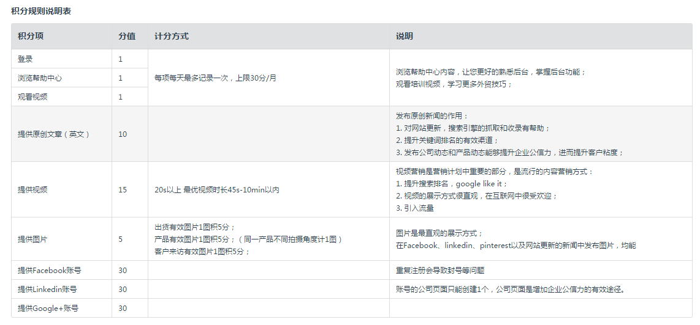
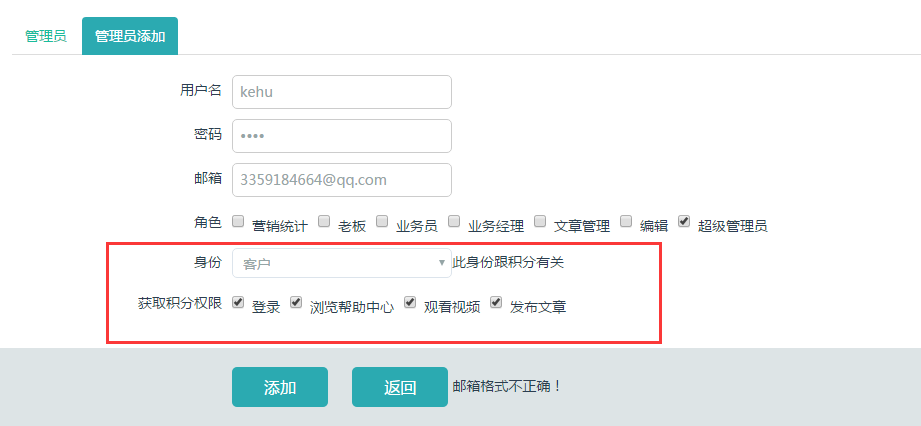
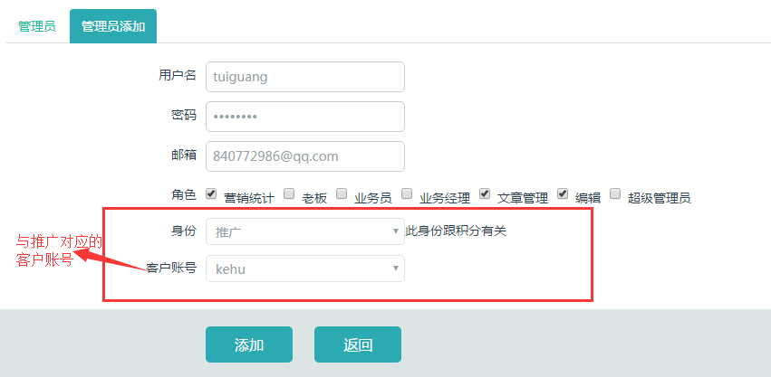
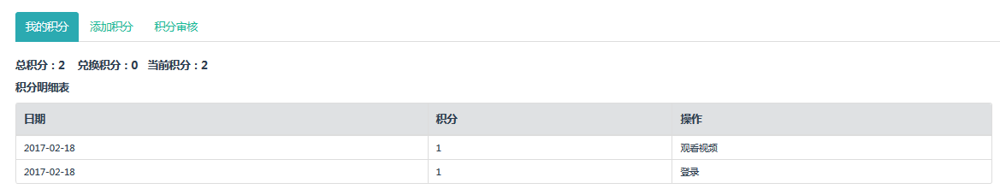
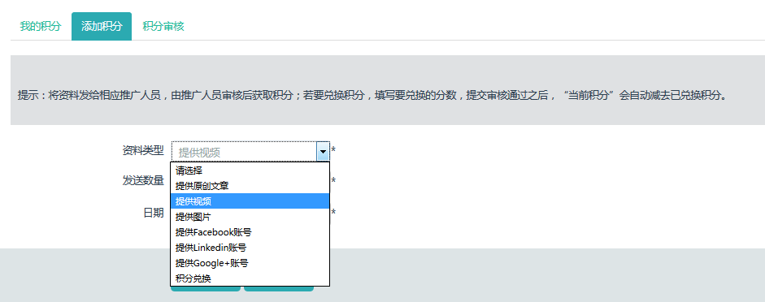
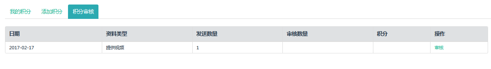
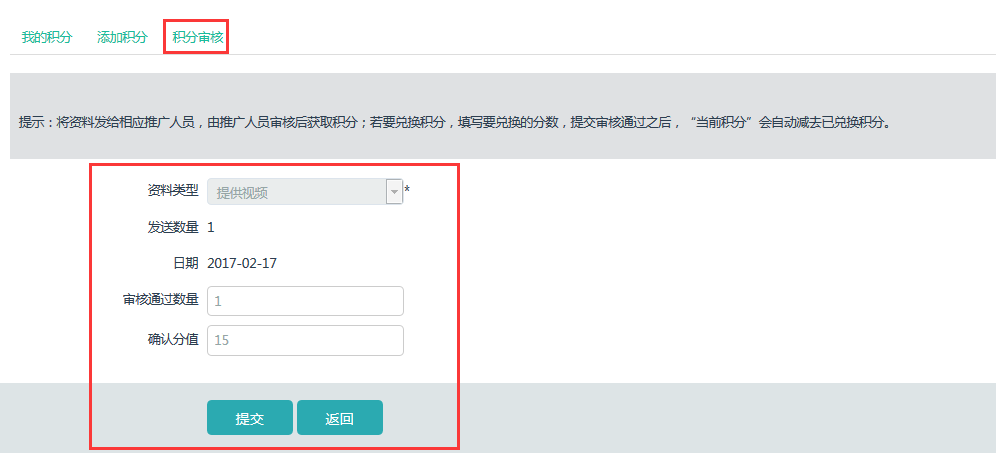
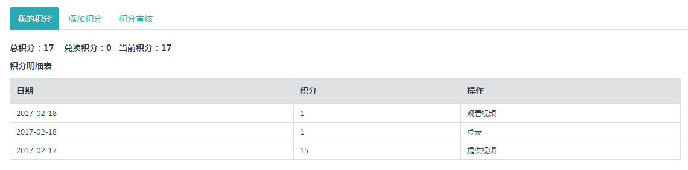

积分管理需要设置相应的身份才能起作用，仅对客户和推广两个角色起作用的。
积分内容包括两部分，一是系统自动记录的，包括登录，发布文章，视听培训课程，浏览帮助中心；另一种是需要“客户”和“推广”手动在后台记录，内容包括：提供原创文章（英文），提供视频，提供图片，提供SNS账号。具体说明可在后台查看“积分说明表”。

项目开始推广后，需给客户开通“客户”角色账号，推广人员使用“推广”账号，两个账号是绑定的。系统会记录“客户”账号的登录，发布文章，视听培训课程等规定的动作。



需要通过qq，邮件发送形式记录积分的内容，客户发送给推广负责人后，“客户”在后台“添加积分”，“推广”角色账号审核，确认分数之后即可记录到“我的积分”里。




“客户”添加积分 “推广”审核积分
审核之后积分增加